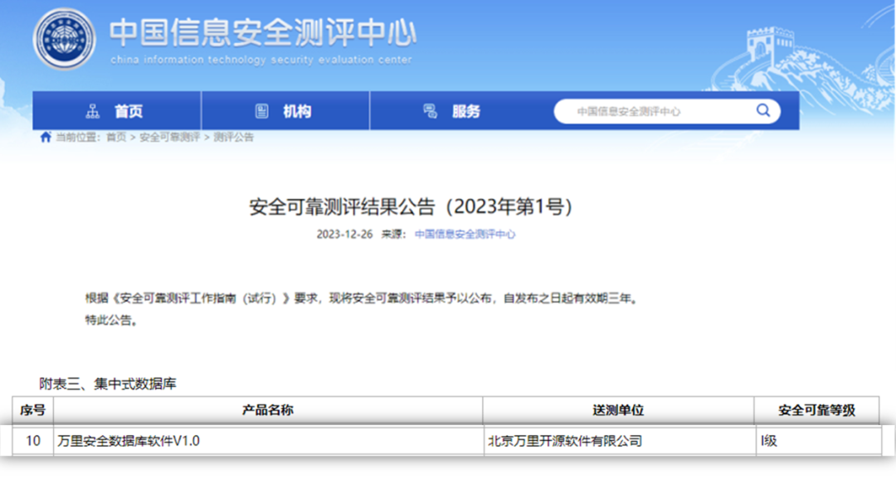

目录 | 信创名录、信创产品目录、信创标准，信创产品之间关系
一、信创的概念与内涵、意义
信创，即信息技术应用创新（产业），由工信部主导从2016年成立信创工委会，命名为“信息技术应用创新”（简称“信创”）。
前期经工信部、中国信息安全测评中心、国家保密局等单位审核和测试，发布国产化产品目录“清单”（至2021年已发四期），以国产服务器、操作系统和数据库为主，扩展到自主可控的基础硬件、基础软件、应用软件、信息安全等领域。
业务上以党+政2核心为基础，拓展至8大行业，目前以金融信创作为切入点开展了三期试点工程。
信创产业推进的背景在于，过去中国 IT 底层标准、架构、产品、生态大多数都由国外IT商业公司来制定，由此存在诸多的底层技术、信息安全、数据保存方式被限制的风险。全球IT生态格局将由过去的“一极”向未来的“两级”演变，中国要逐步 建立基于自己的 IT 底层架构和标准，形成自有开放生态。基于自有 IT 底层架构和标准建立起来的 IT 产业生态便是信创产业的主要内涵。
信创，即信息技术创新，是指通过自主研发、技术创新等方式，实现信息技术的自主可控，降低对外部技术的依赖，提高国家信息安全保障能力。在当前国际形势下，信创显得尤为重要。它不仅关乎国家信息安全，也是推动经济转型升级、实现高质量发展的重要手段。因此，信创的推进对于整个国家的发展具有重大意义。
二、信创目录
信创目录，也被称为国家信创目录或国家信用创新目录，是针对信创产业链领域的一项规划和评估工作。它包含基础设施、基础软件、应用软件、云服务、信息安全等五大类信息技术创新。
其主要作用在于进一步规范信创产业链中的企业和产品，推动信创行业良性发展。通过资金、税收、人才等多方面扶持，加大研发投入，强化核心技术创新能力，培育企业成长，推动“中国制造”向“中国创造”转变。
信创目录回顾：
信创目录内容：涵盖核心产品名录、适配产品名录（基础通用产品、密码产品、专用产品、网络安全产品）
1、2018年ZB、财政部联合发布信创“一期名录”：主要面向应用信息类试点的15家单位。
2、2019年ZB、财政部联合发布信创“二期名录”：二期试点单位扩展至220家。
3、2020年ZB、财政部、公安部联合发布信创“三期名录”：三期名录作为D全替代名录采购目录。
4、2021年ZB、财政部联合发布信创“四期名录”：面向行业新产品，新场景涉及云计算、分布式数据库等场景。
5、2022年公安部发布“四期补充目录”：主要面向网络安全类名录产品。
6、2023年7月起，信创目录宣布取消，面向行业信创的产品选型参考和评估维度有所调整，对于部分产品类目，如云计算系列的信创产品、以及集成型平台产品和其他非核心系统产品，并无明确的官方“名录”供业内客户参考与评估。
三、安全可靠测评结果、采购标准、行业标准
信创行业经历从一期、三期至现在近10年时间，产品不断迭代完善，从过去的 “能用” 到现在的 “好用”，“真试真用”取得一定的效果，面向行业信创原有的信创目录不再足以支撑行业的国产化要求，为了规范信创行业市场化、标准化长远发展。
安全可靠测评结果：在一定程度上延续“四期目录”的产品基础上根据《安全可靠测评指南》（信息安全测评中心、国家保密科技测评中心）在2023年12月26日发布《安全可靠测评结果(2023年第1号)》作为业内第一个公开的产品目录，业内称之为“5期目录”。
其中，万里安全数据库软件V1.0成功入选，安全可靠等级测评为Ⅰ级。
标志着万里数据库在自主知识产权、供应链安全、自主研发实力和产品能力等方面能够满足各类用户对数据存储、管理、分析应用的严格要求。

采购标准：政府采购国产化需求标准-财库[2023]
信创产品覆盖面广，各类产品标准不一。但核心离不开自主可控，自主开发、不受制于人。
2023年12月26日，财政部、工信部共同发布台式机、操作系统、笔记本电脑、一体机、工作站、服务器、操作系统、数据库七种IT软硬件的需求标准。采购人应按《需求标准》进行采购。
例如《操作系统政府采购需求标准（2023年版）》中，对数据安全保障、代码无风险等多项安全指标，要求除用户授权采集的信息外不采集其他数据，相关信息采集无安全风险，相关数据存储在中国境内;操作系统厂商可提供源代码，源代码可供第三方机构审查，代码知识产权无风险，无恶意安全漏洞或后门，代码可追溯、可重构。
行业标准：安全可靠技术要求七大类行业信创标准
2024年3月20日，全国信息技术标准化技术委员会(以下简称"信标委")发布【2024】57号文件《关于征求9项行业标准意见的函》。
全国信标委将9项标准定位为“行业标准”，意味着在政府采购标准之后，信创将迎来安全可靠行业标准，为“8+N”信创升级替代工作提供选型参考
四、信创产品的认证
信创产品认证也成为越来越多企业和机构选择产品的重要参考指标。信创产品的认证标准主要包括以下几个方面：
符合安全可靠测评结果要求：在公布的测评结果清单内。
知识产权：认证的产品需要具备清晰的知识产权证明，包括但不限于著作权、专利等。
第三方测试报告：需要提交由指定的第三方适配中心出具的适配报告，并提交知识产权测试报告。此外，产品还需由国内信创权威测试机构进行严格测试，并提供相应的测试报告。
功能和性能指标：产品必须符合相关国家标准和行业标准的要求，在功能和性能上达到一定的标准。
安全性和稳定性：产品应具有良好的安全性设计，包括数据加密、访问控制、故障恢复等功能。在正常运行条件下，产品需保持稳定的性能和高可用性。
兼容性和互认证：产品需与主流的操作系统、数据库、中间件等软硬件环境有良好的兼容性。同时，支持与其他系统的互操作性，如通过API接口实现数据交换和功能集成。